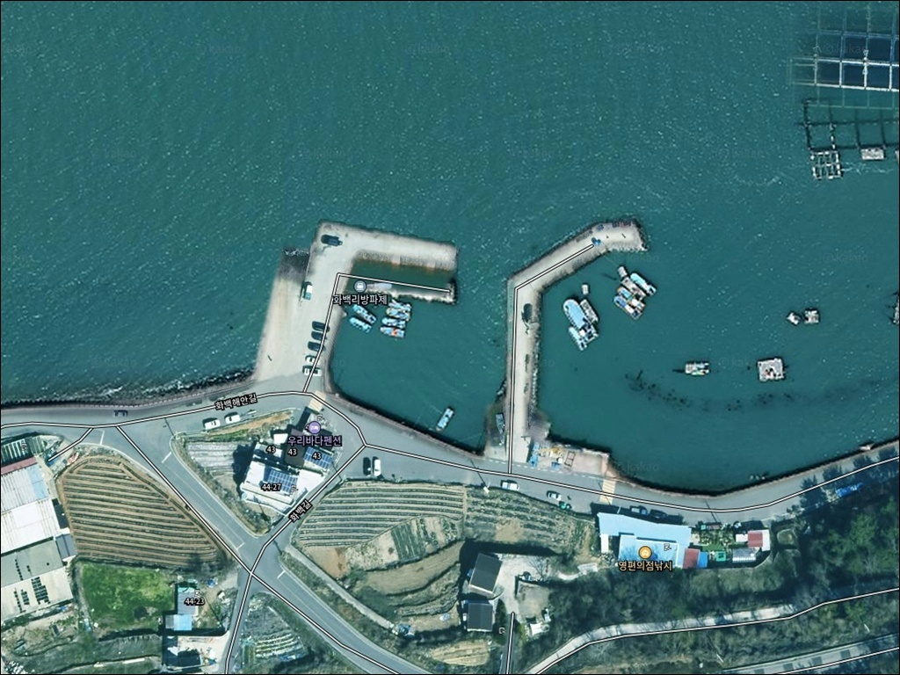
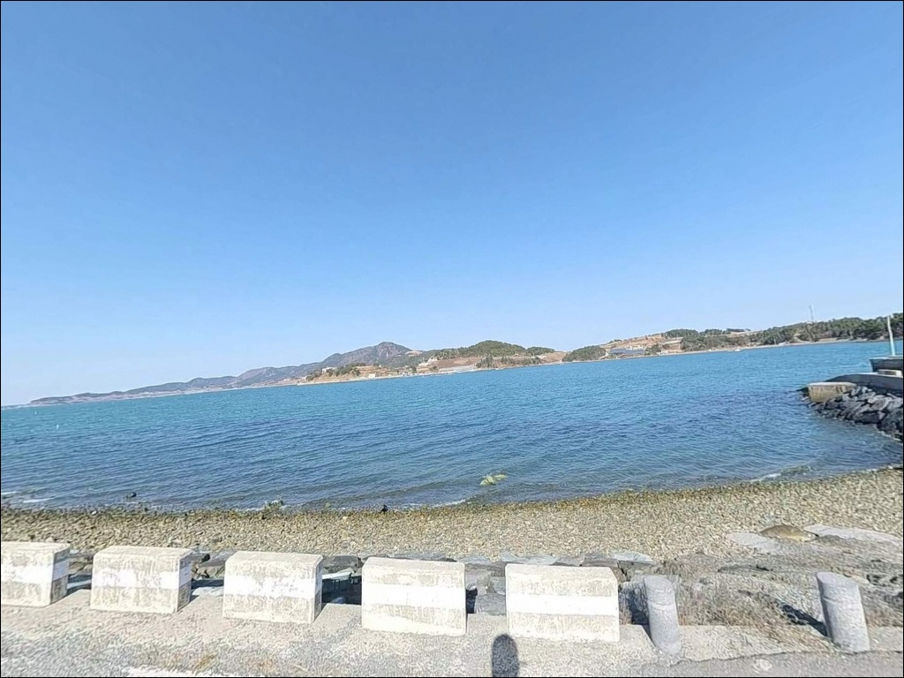
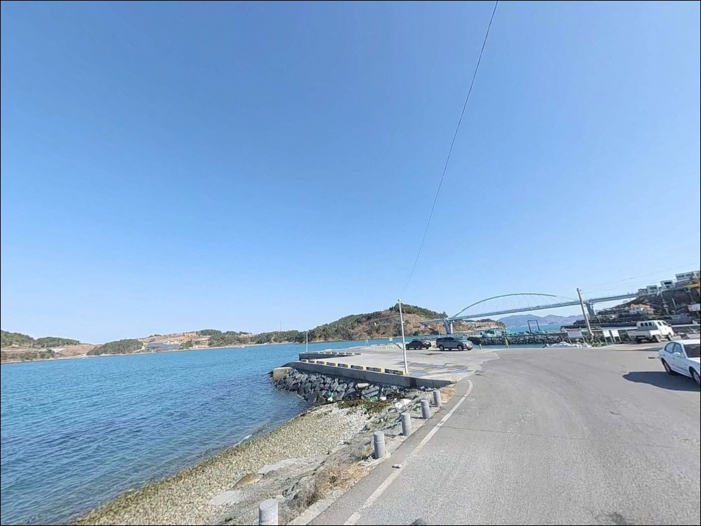
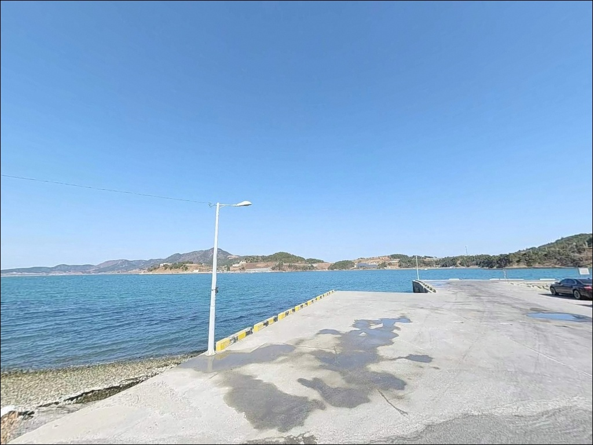
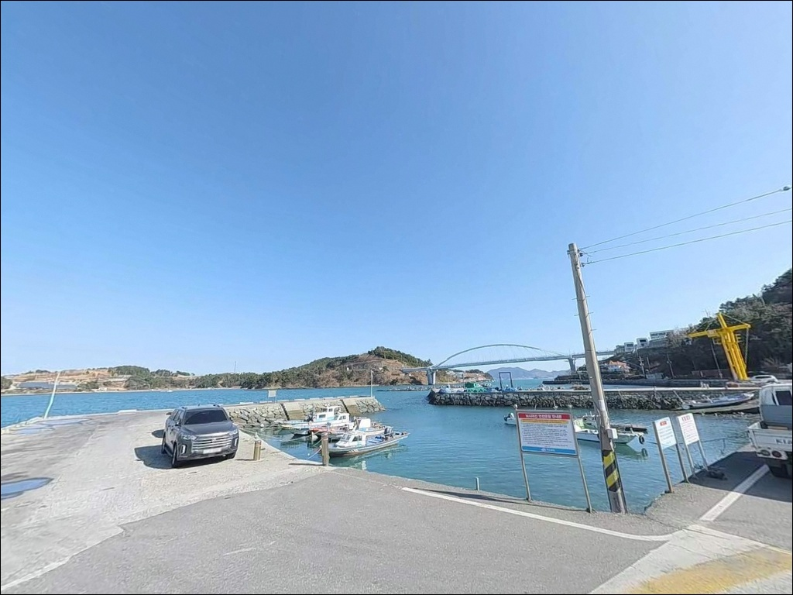
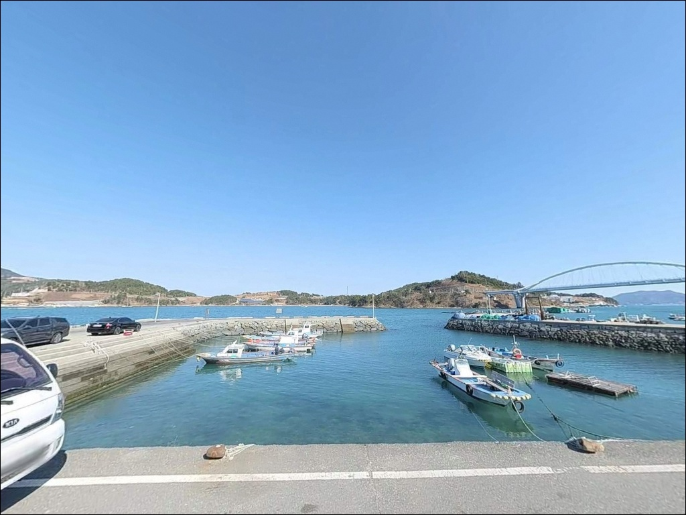
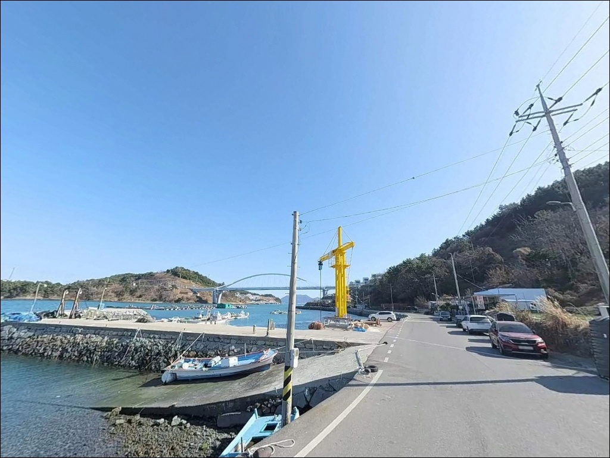
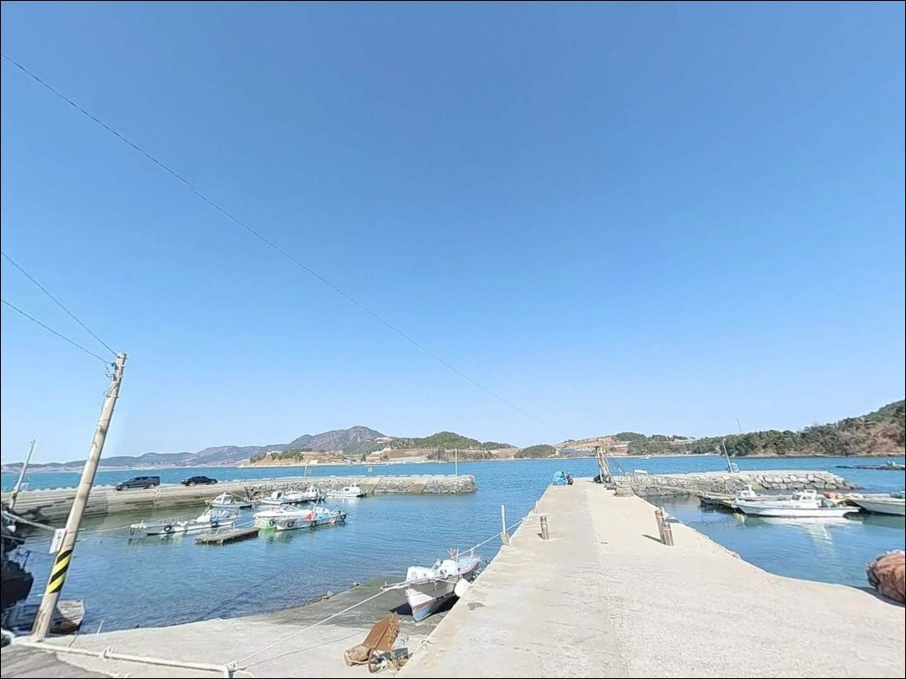
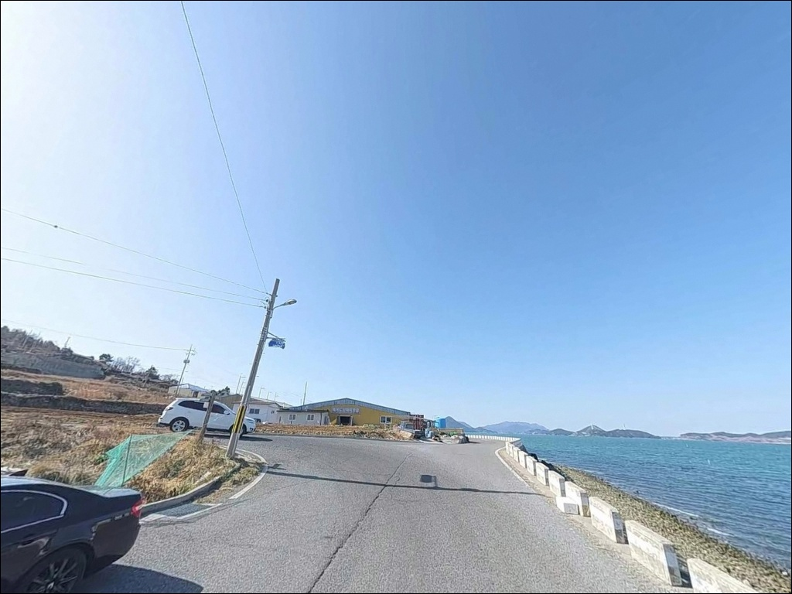

무작정 끝단 서면 채비만 날아가는 화백리방파제, 초밀물 타임에 몰린 입질
이 페이지에는 광고(제휴 링크 포함)가 있으며, 광고 링크를 통해 구매하면 운영자가 판매 수익 또는 수수료를 받을 수 있습니다. 포인트 사진: 카카오맵 스카이뷰·로드뷰. 이 페이지의 지도·사진 이미지는 카카오맵의 실제 서비스 이미지와 다를 수 있습니다.


포인트 안내
화백리방파제
전남 여수시 화정면 백야리 402-2
이 방파제에서 가장 많이 틀리는 판단은
물때와 무관하게 끝단에 자리를 잡는 것입니다.
화백리방파제는 창조류와 낙조류 모두
2.4~2.6노트 수준의 조류가 흐르는 구조로,
사리 전후 조류가 강한 시간대에는
어떤 채비를 써도 흐름을 버티기 어렵습니다.
초밀물 타이밍과 만조 전후 구간이
이 포인트에서 자리를 살리는 핵심 조건입니다.
이 글은 화백리방파제의
진입 동선, 차박 여건, 물때 판단 기준,
낚시 스타일별 공략 조건에 집중합니다.
조황 단정이나 특정 어종 보장은
이 글의 범위에 포함되지 않습니다.

1. 진입 동선과 포인트 접근성
화백리방파제는 백야대교를 건넌 뒤
우측 화백해안길을 따라가면
곧바로 도달하는 구조입니다.
진입로 전 구간이 포장도로이며
비포장 구간은 없습니다.
일반 승용차와 SUV 모두 진입에 무리가 없는 수준이고,
차박용 차량도 별도 제약 없이 접근합니다.
주차는 방파제 앞 도로변 공터를
활용하는 방식이 일반적입니다.
여객선 선착장 기능을 겸하고 있어
공터 면적이 비교적 넓은 편이며,
여러 대의 낚시 차량이 함께 세워지는
구조를 갖추고 있습니다.
회차는 방파제 입구 공터에서 가능합니다.
다만 낮 시간대에는 여객선 이용 차량과
낚시 차량이 뒤섞이는 경우가 있어,
이른 아침 또는 야간 진입이
주차 확보 면에서 유리한 편입니다.

2. 차박 환경과 야간 체류 여건
화백리방파제의 차박은
텐트를 치는 캠핑형보다
차량을 세워두고 낚시와 병행하는
간이 차박 성격이 강합니다.
방파제 앞 도로변은 낚시·관광 차량
통행이 잦은 구간이라
완전한 은폐 분위기보다는
노출된 형태의 노지 차박으로 봐야 합니다.
야간에는 방파제와 인근 도로에
기본 조명이 설치되어 있어
시야 확보는 가능합니다.
차량 통행은 밤에 줄어드는 편이며,
화백마을 취락이 인접해 있어
완전한 오지 분위기는 아닙니다.
외항이 여자만 방향으로 열려 있어
북서풍이 강한 날은 바람 영향을
직접 받는 구조이므로,
기상 확인을 먼저 하고 진입하는 것이
기본 조건입니다.
화장실은 방파제 자체가 아닌
백야도 여객선 터미널 방향을
이용하는 것이 실제 운용 방식입니다.
차량으로 짧게 이동하는 조건을 전제로 한
차박·낚시 조합에 어울리는 구조입니다.


3. 주변 편의시설 및 인프라 현황
방파제 바로 앞 도보 거리에
우리슈퍼낚시와 영편의점이 있습니다.
슈퍼와 낚시점이 함께 운영되는 형태로,
밑밥·미끼·간단한 식료품·음료를
현장에서 바로 보급할 수 있습니다.
출조 직전 마지막 소품 보충이
가능한 위치입니다.
반경 3km 이내에는
화정면사무소와 우체국이
백야리 내에 위치하며,
백야대교 입구 부근에
카페 여러 곳이 영업 중입니다.
기본 생활 인프라는
백야도 내에서 어느 정도 갖추어져 있는 편입니다.
응급 상황 발생 시
여수 시내권 의료기관까지
차량 이동이 필요한 거리이므로,
비상약품과 수분은 출발 전에 준비하는 것이
기본입니다.

4. 물때 기준으로 잡아야 할 방문 전 준비사항
화백리방파제에서 가장 먼저 확인할 것은
물때입니다.
바다타임에서 백야리 기준 물때를 확인하고,
초밀물 시간대와 만조 전후를 핵심 타이밍으로
출발 시각을 역산하는 것이 기본 전략입니다.
사리 전후 조류가 강해지는 시간대에는
외항 끝단 접근에 특히 주의가 필요합니다.
릴찌낚시 채비는 1호 이상 막대찌 기준이
이 포인트 구조에 맞습니다.
원투낚시를 운용한다면
30호 이상 구멍봉돌 채비로
빠른 조류에 채비를 버티게 하는 것이
밑걸림을 줄이는 조건입니다.
암초지대 구간이 있어 여분 채비는
넉넉하게 준비하는 편이 좋습니다.
방파제 테트라포트 구간에서는
구명조끼와 안전화를 착용하는 것이 기본 매너입니다.
야간 출조 시에는 헤드랜턴을 반드시 챙기고,
외항 측 파도·바람 상태를
현장에서 다시 한번 확인한 뒤
자리를 결정하는 것이 안전합니다.
낚시 후 쓰레기는 반드시 수거하고,
어선 동선을 막지 않도록
주차 위치도 확인해 두어야 합니다.

5. 지형 기반 낚시 여건 분석
화백리방파제는 동·서 두 방파제가
만을 감싸는 형태로 배치된 구조입니다.
방파제가 중간에 한 번 꺾이는 구간이 있으며,
꺾이는 지점과 끝단이 수심 변화와
수중여가 집중되는 핵심 자리입니다.
수심은 5~10m 수준으로 연안치고
깊게 떨어지는 구조를 형성합니다.
저질은 펄이 기본이며,
방파제 인근 바닥에는 듬성듬성
수중여가 박혀 있는 여밭성 지형이
일부 구간에 형성됩니다.
감성돔처럼 여를 타는 어종과
록피시 계열을 함께 노릴 수 있는
복합 지형입니다.
조류는 창조류 북서류,
낙조류 남동류 방향으로 흐르며
최강 유속이 2.4~2.6노트 수준입니다.
방파제 끝단에서 백야대교 방향
20~30m 전방을 공략하는 패턴이
이 포인트의 대표 운용 방식으로
자리잡고 있습니다.
최신 조황은 출조 전에
"백야도 방파제 낚시" 키워드로
반드시 검색해 보시기 바랍니다.


6. 이 포인트에 어울리는 낚시 스타일
화백리방파제에서 가장 대표적인 낚시는
릴찌낚시입니다.
방파제 꺾이는 지점과 끝단의
수심 변화 구간을 조류를 타고 흘리는 방식으로,
봄과 가을 시즌에 감성돔을 노리는 낚시인이
주력으로 선택하는 스타일입니다.
초밀물 전후 타이밍에 집중적으로 운용하는 패턴이
이 포인트에 잘 맞습니다.
원투낚시는 깊은 수심과 여밭 지형을
멀리 탐색하는 방식으로 어울립니다.
외항 방향으로 캐스팅해
바닥을 느리게 끌어오는 패턴이
이 포인트의 저질과 지형 구조에 맞으며,
농어·붕장어를 겨냥한 원투 운용은
내항 쪽 조용한 수역에서도 유효합니다.
빠른 조류 구간에서는 봉돌 무게를
충분히 높여 밑걸림을 줄이는 것이
이 포인트의 기본 조건입니다.
루어낚시는 테트라포트 경계와
방파제 끝단 외항 측을 따라
워킹 패턴으로 운용합니다.
갈치·고등어·전갱이가 붙는 시기에는
메탈지그나 전자찌 채비로
다양한 방식을 병행하는 것도
이 포인트에서 가능한 패턴입니다.
야간과 새벽 시간대에
농어 루어 반응이 살아나는 구조이므로,
야간 출조 계획이라면
루어 채비를 함께 준비하는 것이 좋습니다.

7. 대안 포인트와 플랜 B 동선
화백리방파제 조류가 너무 강하거나
주차 여건이 여의치 않을 때는
백야항 방파제가 첫 번째 대안입니다.
같은 백야도 내에 위치하며
갈치·학공치 시즌 야간 루어·찌낚시로
검증된 포인트입니다.
화백리방파제와 조류 방향이 다른 시간대에
번갈아 탐색하는 로테이션 운용도 가능합니다.
반경 3km 이내에 위치한
와달리방파제도 노려볼 만합니다.
같은 만 안에 자리한 소형 방파제로
감성돔·갈치 등 이 일대 해역 패턴을 공유합니다.
화백리방파제와 같은 날 두 포인트를
묶어서 탐색하는 동선으로도
활용하기 좋은 위치입니다.
백야대교 하단은
조류가 매우 강해 대물 감성돔과
농어 공략에 유리한 자리로 알려져 있습니다.
조류 세기를 직접 활용해야 하는 낚시 방식에
어울리는 포인트이며,
화백리방파제 조류가 너무 강할 때
오히려 맞는 자리가 될 수 있습니다.

초밀물 타이밍을 맞추면
화백리방파제의 조류가 살아납니다
릴찌낚시나 원투낚시를 즐기는 낚시인이라면
화백리방파제의 지형 조건은
잘 맞는 구조입니다.
수심 있는 여밭과 조류가 살아나는
꺾이는 구간·끝단 조합이
다양한 어종을 노리기에
좋은 환경을 갖추고 있습니다.
방파제 바로 앞에 낚시점이 위치해
소품 보충도 현장에서 가능합니다.
반면 물때 확인 없이
사리 전후 강조류 시간대에 도착하거나,
차박을 위한 완전한 프라이버시를
기대하고 간다면 실망이 클 수 있습니다.
물때 계산, 채비 여분 확보, 기상 확인,
이 세 가지를 갖추고 간다면
백야도 내에서 하루를 알차게 보낼 수 있는
포인트입니다.
낚시 후 방파제 앞에 차를 대고
여자만 방향의 조용한 밤을 보내는
간이 차박 여행자라면,
낚시점과 편의시설이 바로 앞에 있는
이 포인트의 위치 조건이
낚시와 차박을 함께 즐기기에
딱 맞는 구조입니다.